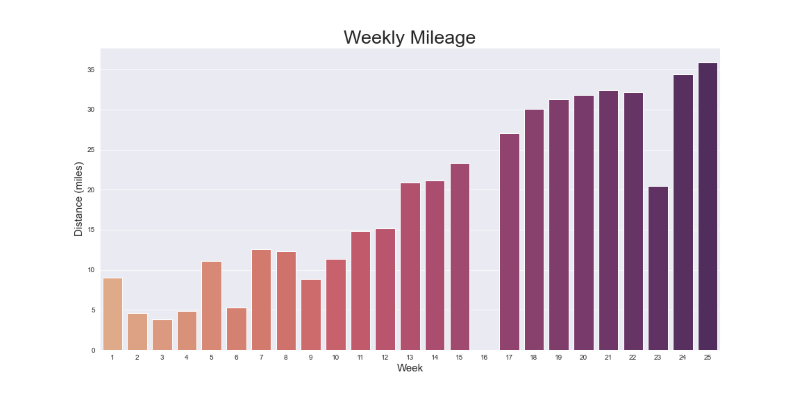
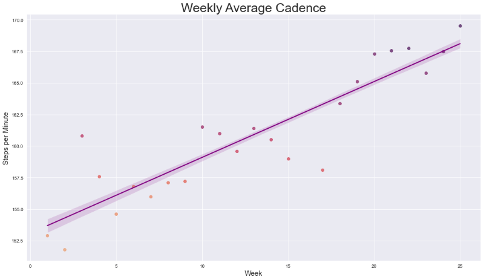
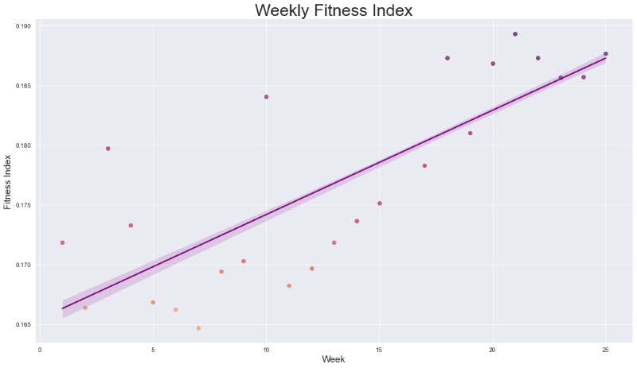

The Covid-19 pandemic has changed many aspects of our daily lives, including how we interact,
work, study, and even where we live. Over the past 12 months, many businesses, schools, and institutions have
shifted from their usual in-person or office environments, to a remote or online model. Because of this shift away
from in-person work and education, there have been considerable reports of people leaving major metropolitan areas
in search of a quieter, slower-paced, and certainly less expensive lifestyle. This “mass exodus” of big cities, as
the media has referred to it, has resulted in some interesting real estate anecdotes, and some that I believe are
worthy of investigation. Reports of “plummeting rent” in major cities have been accompanied by similar reports of
“skyrocketing” home prices in the suburbs, insinuating that perhaps the appeal of big cities is quickly becoming a
thing of the past.
For the next few moments, let’s put the anecdotes aside and see what the data has to say on the matter. Has the
metropolitan real estate market changed dramatically over the past year, and has there truly been a meteoric rise in demand
for suburban and/or rural property? To narrow the focus of this investigation, I would like to specifically look at the state
of New York as a case study. In doing so, I’d like to compare real estate trends in New York City to trends in the rest of
the state over the past 12 months.

While the median monthly rent in New York City as a whole has decreased over the past year, the same downward trajectory
has not been shown in all boroughs equally. Seen here, Manhattan has experienced a significantly greater reduction in rent in 2020 than any
borough. Brooklyn and Queens saw a subtle decrease in monthly rent, but nowhere near the rate of Manhattan. At the other end of the spectrum,
the Bronx had the most stable rental market of any borough in 2020, while Staten Island actually experienced an increase in median rent by the year’s end.
This clearly doesn’t illustrate the media’s going narrative of “plummeting prices in cities”, but rather “plummeting prices in certain parts of cities”.
So, what exactly is going on here? What is the driver behind the volatile market in Manhattan, while the Bronx remains stable?

Historically, suburban real estate demand is closely tied to commuting time to a nearby major city. Many people want to reap the career
benefits and economic opportunities that cities offer, but don’t want to live in a bustling metropolis. With remote work becoming the norm for many during the
Covid-19 pandemic, was proximity to a city still a driver of real estate demand?
This map illustrates the shifting conditions in the market by assessing real estate demand in New York State at three points throughout 2020. The colors represent
the median amount of time that properties in each county have been sitting on the market. Properties in the deepest red counties are only sitting an average of
two weeks, while the properties in white counties are sitting on the market for more than three months.
Starting in April 2020, when the pandemic was still a relatively new phenomenon, we see what would be considered a predictable distribution of real estate demand
in New York State. Areas within driving distance of New York City, Rochester, and Buffalo are flying off the market at break neck speed, while the more remote
areas in the northern and south-western regions of the state are sluggish.
By July, things seem to have changed dramatically. At this time, daily life for many people no longer resembles the pre-pandemic world, and it has begun to take
a heavy toll on many facets of the economy. In just a few short months, the real estate market in the Catskills and Hudson Valley region has begun to slow down
significantly. Being just a short drive north of New York City, this area was formerly the most competitive real estate market in the state only 3 months prior.
At the same time, markets in Central New York and the Northernmost pocket of the state are starting to gain momentum.
Once we make it to December, the real estate market bears almost no resemblance to the one we knew in the early Spring. The areas within commuting distance of
NYC are now the slowest moving in the entire state, outpaced significantly by the markets in Central and Western New York. The once highly sought-after commute to
the city seems to not have any impact on demand. It’s possible that those looking for a quieter life outside of the city are planning to work remotely long-term.

2020 was a year of drastic change for many people and industries. However, like most stories of anecdotal proportion, the story of the
pandemic real estate market is one characterized by nuance. While certain neighborhoods in New York City experienced a noticeable decline in rental prices, not
all were affected equally. In fact, working-class and lower income neighborhoods were virtually unaffected in terms of property demand. We also saw how the
pandemic shifted real estate demand in the rest of the state away from the metropolitan centers, and into the northern and central regions of the state where
property once moved at a glacial pace. It will be interesting to see how this market continues to evolve in the coming months and years in response to the
pandemic and our new ways of living, working, and going to school.